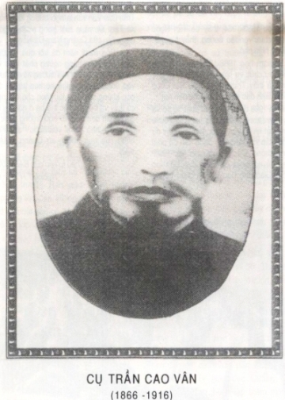

Làng Tư Phú, tổng Đa Hòa, phủ Điện Bàn, tỉnh Quảng Nam, một làng trong mười mấy làng thuộc khu đất Gò Nổi, một khu đất đã có tiếng văn vật trên miếng đất Quảng Nam.
Chính khu đất ấy trước kia cũng như gần đây đã nảy sinh các cụ Phạm Phú Thứ, Hoàng Diệu và nhiều nhân vật khác nữa.
Với làng Tư Phú, cụ Trần Công Trực, người ta thường gọi là cụ Quyền Trực, là người có danh vọng địa vị, tuy cụ không thi cử đỗ đạt nhưng cũng là một nhân vật trí thức của làng Tư Phú, một bậc thâm nho của thời bấy giờ; tuy cụ không trực tiếp tham gia vào các công cuộc cần vương nghĩa sĩ giúp nước phò vua, nhưng tâm trường cụ vẫn thiết tha đối với đất nước quê hương gặp phải hồi biến cố. Tâm trường ấy chính là tâm trường những nhà nho đắc ở đạo trung hiếu tiết nghĩa của Khổng Mạnh. Tâm trường ấy đã giục cụ tham gia bằng cách gián tiếp, nghĩa là cụ đã đào tạo cũng như đã hy sinh để giúp đỡ cho con cụ, một người con lịch sử đã làm nên công nghiệp vĩ đại lừng lẫy muôn đời.

Cụ Trần Công Trực có ba người vợ, sinh được sáu trai, ba gái; bà vợ cả là Đoàn thị sinh được hai trai, một gái; người trai đầu lòng tên là Trần Công Thọ, tức cụ Trần Cao Vân.
Cụ Trần Cao Vân sinh năm Bính Dần (1866), vào; năm thứ 20 triều Tự Đức; lúc lớn lên, từng học và ra thi lấy tên quyển là Trần Cao Đệ, lúc vào chùa lấy pháp danh Như Ý, lúc hoạt động cách mệnh mới đổi tên là Trần Cao Vân và biệt hiệu Hồng Việt và Chánh Minh [1].
Cụ Cao Vân sinh trưởng trong một gia đình về vật chất không được phong phú lắm, đã thế năm lên tám tuổi, cụ và các em dại đã phải mồ côi mẹ! Thân sinh cụ thì suốt ngày nọ lẫn ngày kia mảng phải chăm nom công cuộc sinh hoạt của gia đình với nghề chăn tằm, làm ruộng, là những chuyên nghiệp của vùng trung châu Quảng Nam.
Tình cảnh gia đình thế ấy, dù lòng thương con có thiết tha đến mực nào, tưởng thân sinh cụ cũng không làm sao săn sóc, chăm nom cho đầy đủ được. Tuy nhiên, thân sinh cụ vẫn là một nhà nho thực tế, chuộng văn học, thích hoạt động, lúc nào cũng chú trọng ở các con, mong ngày mai các con sẽ làm nên một công nghiệp gì? mà công nghiệp ấy, với thời bấy giờ, chỉ có một con đường duy nhất là phải xuất thân từ con đường cử nghiệp trước đã. Thế nên dù gia đình gặp phải bao lần biến cố, công việc sinh hoạt phải bao nhiêu sự bận rộn, thân sinh cụ cũng không lãng quên được một việc trước hết là phải cho con đi học.
Có học, có thi cử, có đỗ đạt, có ra làm quan, thì bất cứ một lời nói hoặc một hành động gì mới có ảnh hưởng đối với xã hội; ấy là một ý niệm của thời đại.
Nhờ thế mà năm lên chín tuổi, cụ Cao Vân đã bắt đầu được tùng học với các cụ đồ nho ở các trường tư thục trong làng; đến năm mười ba, mười bốn tuổi, cụ Cao Vân tùng học ở các trường giáo, trường huấn.
Theo lời tường thuật của các bậc cố lão đồng thời được biết cụ Cao Vân, và những người được nghe kể lại đời cụ, thì con người cụ Cao Vân, về hình thức: một hình vóc trung trung, khuôn mặt vuông vức, trán cao, đôi mắt sâu và sáng quắc, lại thêm năm chòm râu dài tha thướt trông ra thật uy nghi.
Sinh bình, cụ rất giản dị. Trừ cái tuổi thiếu thời không kể làm gì, bắt đầu năm hai mươi tuổi, ngày từ biệt gia hương, cho đến chung cuộc đời cụ, trải bao thời của một nho sĩ, một đạo sĩ, rồi đến một chiến sĩ cách mệnh, cụ sống một đời sống đạm bạc với chiếc áo thụng vải ta nhuộm xanh chàm, chiếc khăn nhiễu thâm, chiếc nón lá, là những trang phẩm bất dịch, là những lợỉ khí đã giúp cụ tự vệ cũng như chiến thắng với bao gió sương mưa nắng trên quãng đường đời chông gai gồ ghề!
Về tinh thăn: con người cụ Cao Vân có nhiều điểm đặc sắc, đã thông minh lại hiếu học, tính tình rất ôn hòa, ý chí rất cương quyết, thờ cha mẹ chí hiếu, đối với xã hội nhân quần luôn luôn một mực kỉnh thành.
Về học vấn, về tư tưởng cũng như về văn chương, cụ phát đạt rất sớm, mặc dù cụ không đỗ đạt như các cụ khác, nhưng cứ xem những câu đối, những bài thi, cho đến hành động của đời cụ, ta cũng đủ thấy ngay cụ Cao Vân là người khảo học uyên thâm, văn chương lỗi lạc. Từ lúc tuổi trẻ, cụ đã có một tinh thần mới, tinh thần cách mệnh! Một ý chí mới, ý chí cách mệnh! Cái tinh thần mới ấy, năm 1900, đã đem lại cho đời cụ một kết quả, là nhận lấy cái án “yêu thơ yêu ngôn” và ba năm tù, vì đã đem dịch “Tiên thiên” của Phục Hy và dịch “Hậu thiên” của Văn Vương, phối hợp thành “Trung thiên dịch”.
Cái ý chí mới ấy, năm 1916, đã đem lại cho đời cụ một kết quả nữa, là nhận lấy cái tội “phiến biến” để lên đoạn đầu đài, vì đã phò vua Duy Tân chống lại chế độ Bảo hộ.
Những thi văn câu đối của cụ lúc thiếu thời, lúc còn là cậu thư sinh, đã có nhiều lắm, nhưng chưa sưu tầm được hết, xin chép ra đây một ít để chứng cho những đặc sắc vừa nói trên.
Năm mười ba tuổi, cụ đương tùng học một trường giáo ngay ở làng. Cụ giáo dạy học trò rất cần mẫn; ngoài những thì giờ học hằng ngày, tối nào cụ cũng dạy thêm các trò tập đặt đối làm bài. Một hôm nhằm bữa đêm trăng, các trò đến đông đủ; lúc vào học, ngay ở giữa trường có một cái đèn treo, nhân đấy cụ giáo ra câu đối:
“Đèn treo giọi sáng bốn phương nhà”.
Trong hàng sĩ tử, cụ Cao Vân là nhỏ tuổi nhất nhưng lanh trí, đứng lên đáp:
“Trăng tỏ khắp soi muôn cụm núi”.
Cụ giáo cho câu đối ấy là hay và xuất sắc, tuy giản dị không có gì, nhưng ngẫu nhiên cậu bé phát tiết ý chí lớn của mình đã ngấm ngầm sẵn có từ trong tinh thần.
Lại một lần nữa, vào lúc tháng mười ta, cụ đến nghe giảng sách ở nhà một cụ cử; buổi giảng xong, có người hàng xóm đưa đến biếu bà cụ cử một mớ hành hương để làm giống. Bà cụ bảo: “Hành này còn non mà tàn sớm thế này e giống khổng [2] mạnh”. Cụ cử thầy nghe câu nói có ngụ được ý hay hay, nên lấy đó ra câu đối:
“Hành tàn [3] giống khổng mạnh [4]”.
Câu đối này có hai nghĩa: một nghĩa nói giống hành khổng mạnh là không tốt.
Một nghĩa chỉ cho đời người khi đáng “hành” động hay lúc đáng thoái “tàng” đều phải phép theo đạo Khổng Mạnh.
Cụ Cao Vân ứng khẩu đối:
“Cải hóa con càn khôn [5]”.
Câu đối này cũng có hai nghĩa: một nghĩa thông thường nói giống rau cải con, đến lúc nó “hóa”, lá nảy nở xanh tốt lên, thì con cải ngày “càng khôn”, nghĩa là cây càng lớn.
Một nghĩa chính, thì ý cụ chỉ vào bầu vũ trụ sum la vạn hữu này, từ trời đất núi sông đến muôn sự muôn vật luôn luôn phải tiến, không bao giờ đứng yên một chỗ, hễ cùng thì biến, hễ biến thì thông. Làm người phải hành động cũng như phải sống theo cuộc tiến hóa công cộng ấy; cái gì thích hợp thì duy trì, không thích hợp thì đào thải, giữ theo đạo thời trung của cụ Khổng, cái đạo “vô ý, vô tất, vô cố, vô ngã” mà các môn sinh đã tán dương cụ, nghĩa là tất cả những cái gì của đời người phải biết “cải hóa”, tức là biết thay đổi, biết cách mệnh, để đuổi theo cuộc tiến hóa không ngừng của sự vật, ấy mới là người đứng giữa “càn khôn”, ấy mới là con trời đất.
Cụ cử thầy và cả sĩ tử đều khen ngợi câu đối ấy, chẳng những hay về phần đối đáp, về cách khéo dùng chữ thổ âm, mà lại rất đáng được kính phục về tinh thần ý chí của một thư sinh với tuổi mười lăm, mười sáu, đã phát biểu một tương lai mới mẻ của mình.
Câu đối ấy về sau được truyền tụng ở các vùng Bình Định, Quảng Nam và những nơi mà cụ Cao Vân đã đặt chân tới.
Lại bao lần nữa, trong những phút cảm khích, cụ đã ngâm lên nhiều bài thi, bài phú được gọi là kiệt tác, không tiện chép hết vào đây, xin dành ở mục thi văn. Đây chỉ chép một bài đầu đề vịnh cối xay để kết luận mục “Thân thế”:
“Khen ai xưa đã khéo trêu bày,
Tạo cõi này ra vốn để xay.
Gốc ‘tí’ [6] kiền khôn trồng giữa ruốn,
Cán ‘dần’ tinh đẩu vận trong tay.
Nghiến răng tựa sấm ì ầm dậy,
Mở miệng dường mưa lác đác bay.
‘Tứ trụ’ dưới nhờ chơn ‘đế’ vững,
Cùng trên phụ bật sẵn hai tay”.
Đại khái thân thế cụ Cao Vân, thân thế của một người gian nan đau khổ! Mồ côi mẹ ngay từ cái tuổi đồng mông, cụ Cao Vân đã bắt đầu nếm lấy mùi khô khan tẻ lạnh của gia đình, cho đến năm hai mươi tuổi, chính cái năm đen tối và tủi nhục của dân tộc, kinh thành Huế mất, vua Hàm Nghi bỏ ngôi, cụ cũng bắt đầu đặt chân trên đường phiêu lưu. Cho đến ngày kết liễu đời cụ, ngót ba mươi năm trời với bao phong ba bão táp, cụ vẫn một tinh thần tranh đấu không ngừng, để đáp lại tiẽng gọi thiết tha của lương tri cũng như của non sông tổ quốc.
Chú thích:
[1] Cụ còn có một biệt danh: Bạch Sĩ.
[2] Khổng tức không, tiếng nói địa phương Quảng Nam.
[3] Hành tàn tức rau hành tàn tạ, mượn âm thành chữ hành tàng.
[4] Khổng mạnh là không mạnh, mượn âm thành: ông Khổng, ông Mạnh.
[5] Càn khôn là trời đất, mượn âm để ghép vào câu: càng khôn, là càng lớn khôn. Ngày xưa các cụ ta có lối đối miệng (ứng khẩu) đối mượn âm.
[6] “Đạo thư” có câu: “Thiên khai ư tí, địa tịch ư sửu, nhân sinh ư dần”. Gốc “tí” chỉ cho ngôi trời. Can “dần” chỉ cho người, ý nói trời, người hợp lại.